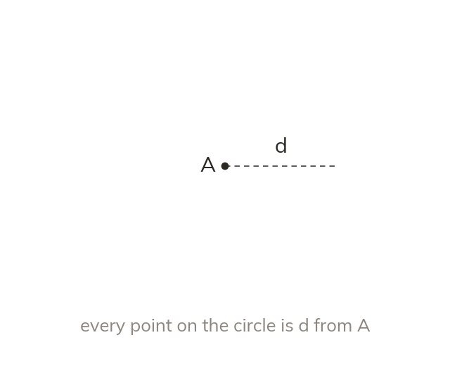
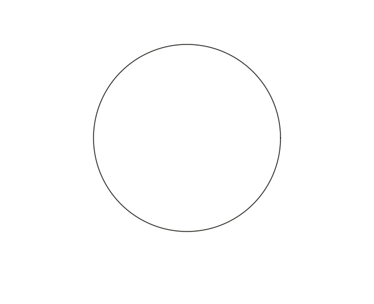
Locus of a fixed distance from a point
The locus of points d from a point A is a circle of radius d.
The locus of points a fixed distance d from a point A is a circle of radius d, drawn with compasses set to d.
You now know how to bisect a line and an angle exactly. A locus is a wider idea: the set of every point that satisfies a rule - and today's rules give shapes you may not expect: circles, parallel lines, and racetracks.
Work down the page at your own pace. Write every answer in your book first, then click to check it.
Read each card, then follow the worked examples one step at a time.


The locus of points d from a point A is a circle of radius d.
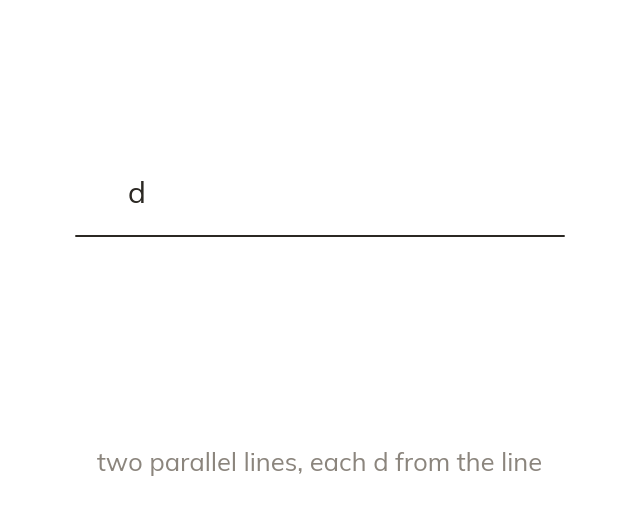
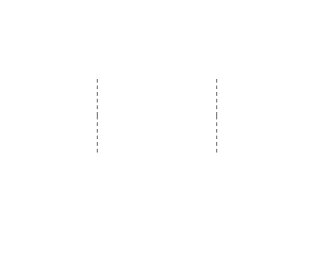
The locus of points d from an infinite line is two parallel lines. There is one on each side, each d away.
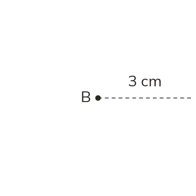
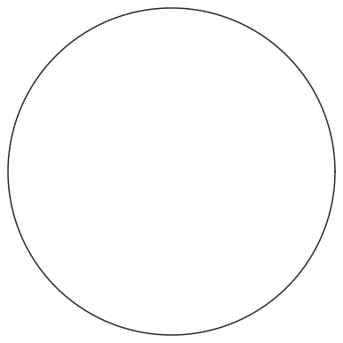
Pick an answer. If it's wrong, the feedback tells you which mistake it was.
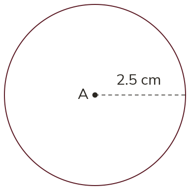
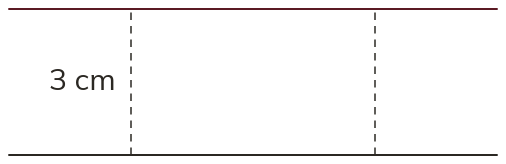
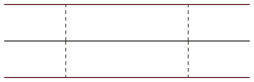
Read each card, then follow the worked examples one step at a time.
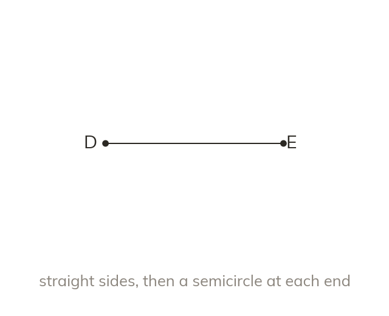
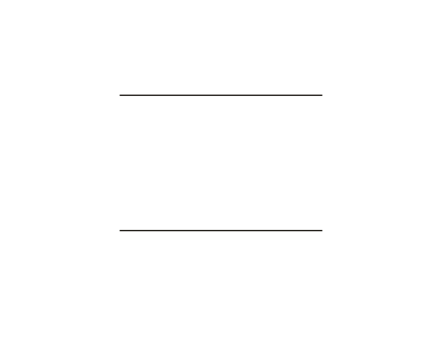
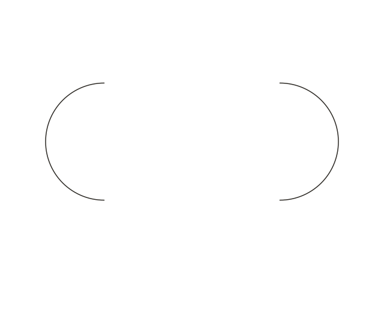
A line segment has two ends. Its locus is two parallel sides, joined by a semicircle at each end.
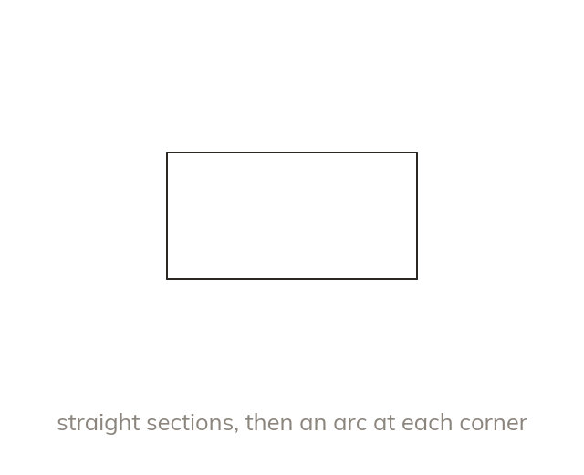
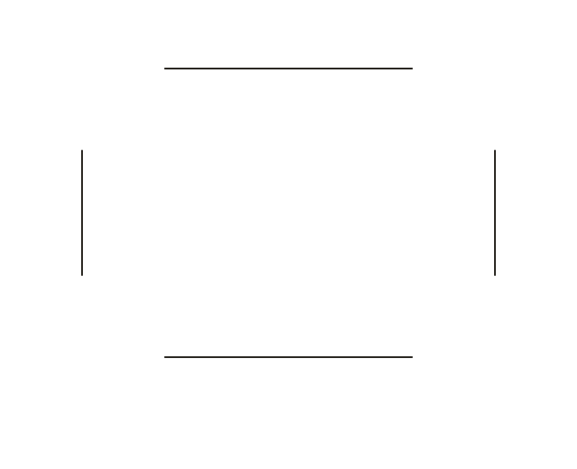
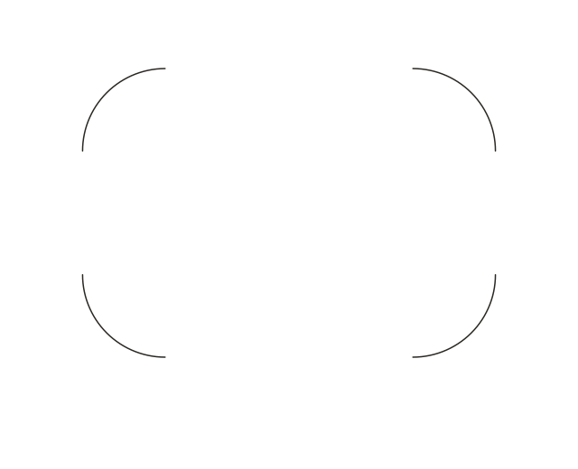
Around a polygon, the locus runs parallel to each side. At each corner it rounds into an arc of radius d.
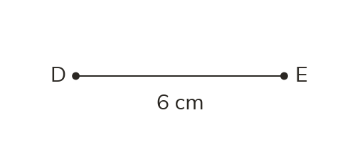
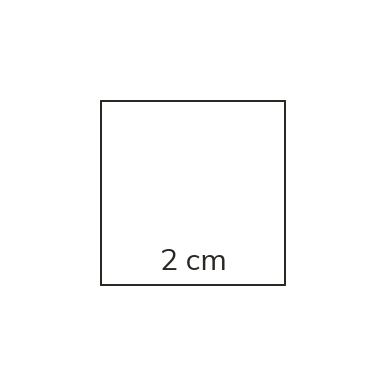
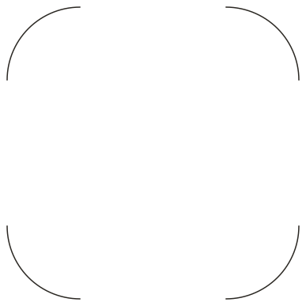
Pick an answer. If it's wrong, the feedback tells you which mistake it was.
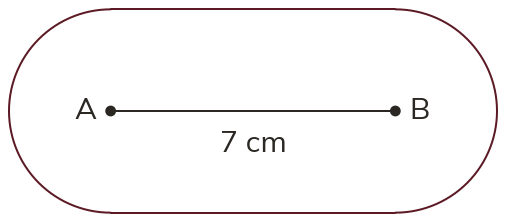
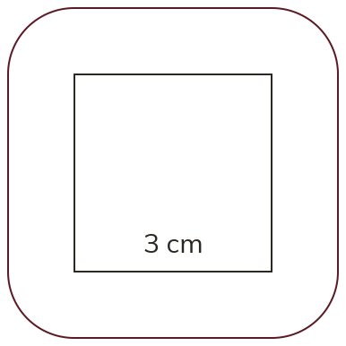
Finished? Next lesson: 7.3.4 Combining Loci.
Log in, then search for a code to practise that skill.
Videos, worksheets and more on each part of this lesson.